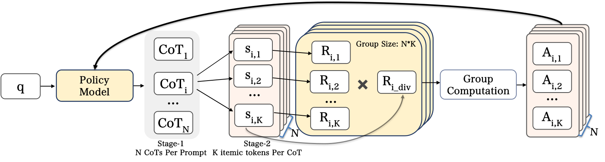
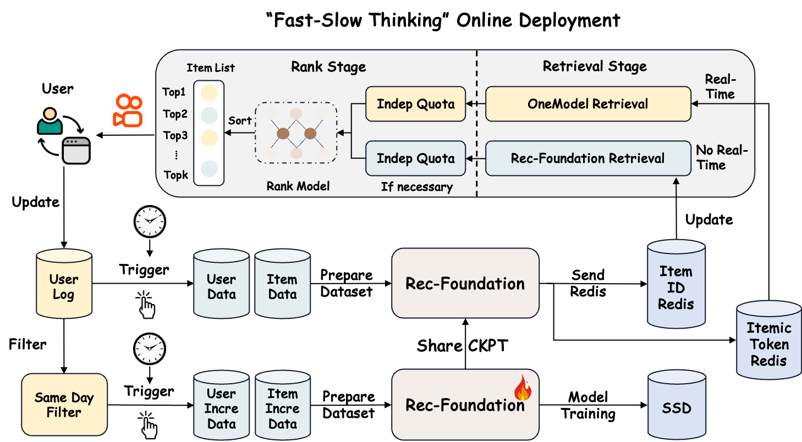

Contents · 10 sections
1What problem is it solving?2The big picture3Item tokens and pretraining: teach the model what items are4SFT: a fixed structure for reasoning5RL: train per business domain, then merge6Does this actually make "thinking" better?7How it is deployed, and the results8Limitations9How a recommendation team could try this10VerdictSHARE
Worth reading for teams building generative recommenders who are thinking about adding a reasoning step, as long as you separate the gains that come from "thinking" from the gains that come from much stronger pretraining. Kuaishou ran into the same problem with OneRec-Think and OpenOneRec: making the model write a reasoning trace before emitting items did not recommend better than emitting items directly. The core idea of OneReason (Kuaishou's recommendation foundation model, continued from Qwen3, with 8B and 0.8B open releases) in one sentence: first align item codes with text meaning through 578B tokens of pretraining, then SFT on reasoning traces with a fixed structure, and finally run RL separately per business domain and merge the experts into one model. On cross-domain live-stream recommendation (given a user profile and history across video, e-commerce, ads and live streams, predict the user's next items in the live domain), thinking mode reaches Pass@64 (the share of users for whom at least one true target appears among 64 generated candidates) of 21.10% versus 21.01% without thinking, a tiny gap. Simply swapping in its pretrained backbone under the plainest SFT lifts Pass@64 from 0.89% to 19.32%. In a 10-day A/B test on Kuaishou's local-services ads, the two deployment paths together raised revenue by +8.234%.
What problem is it solving?
Generative recommendation treats "what next" as generation: each item is represented by a few discrete codes (the paper calls them itemic tokens; they play the role of a Semantic ID), and the model reads the user history and generates the codes of the next item one by one. Kuaishou's OneRec line is already in production and has shown that this approach scales.
"Think before answering" works well for LLMs on math and code, and the authors want to bring it to recommendation. The catch is that item tokens are just IDs; the model learns flat transition patterns like "people who watch A often watch B", with no grounds that could be written out as text. The authors borrow a lesson from multimodal LLMs: if images and text are not aligned, a long reasoning chain just spins. So they split the problem in two: first make the model understand what each item token stands for, then teach it to reason about user interests with a fixed structure.
The paper includes a real reasoning example that shows what they want. A middle-aged female user whose profile is household and clothing purchases, interested in outfits and home goods. Recently she repeatedly bought cleaning supplies, watched cleaning tutorials for a long time, searched for and ordered "new long trousers for teenage boys", and also followed wellness live streams and bought snacks. The reasoning first groups these behaviors into 6 interest directions, then compares which is most likely to continue: home cleaning and children's clothing have search, click, purchase and long-watch evidence at once, so they are the strongest next directions; snacks and wellness look like intermittent needs. Only after the reasoning does the model emit the next item's tokens. The sections below keep using this user.
The big picture
![OneReason training pipeline. Left: pretraining; stage one trains only the newly added item token embeddings and output layer, stages two and three train all parameters, on multi-granularity recommendation data plus general data. Middle: SFT, about 3.95M samples, 38% general data; recommendation reasoning samples follow the three steps "user profile abstraction, interest expansion, transition judgment" and are quality-scored. Right: RL; experts are trained separately on video, ads, live and e-commerce, then merged with RFT or MOPD. Bottom: the four evaluation layers R0 to R3.](../../../figs/2026-08-17/generative/2606.06260/fig1_pipeline.png)
Four blocks overall:
| Stage | Input | What it does | Output |
|---|---|---|---|
| Item tokenization | Cover, video frames, text, audio | Encode into one vector, quantize with RQ-KMeans into 3 codes | Each item = 1 domain marker + 3 codes |
| Pretraining | 578B tokens of recommendation and general data | Put item tokens and text in one semantic space | A model that can describe item tokens in text and find items from text |
| SFT | About 3.95M instruction samples | Teach structured recommendation reasoning, keep direct-answer samples too | A model that can "think, then recommend" |
| RL and merging | Recommendation data from four business domains | GRPO per domain, then merge into one model | The final OneReason |
The key division of labor: pretraining makes the model recognize items, SFT gives the reasoning a format, and RL makes the reasoning actually help hit rates.
Item tokens and pretraining: teach the model what items are
Item tokens are built like a typical Semantic ID: ViT, Qwen3-VL and an audio encoder compress item content into one vector, trained so that another LLM can write the item's caption from it; RQ-KMeans then quantizes it into three code layers of 8,192 codes each. A video becomes 4 tokens such as <|video_begin|><a_5028><b_6733><c_2559>. Unlike OpenOneRec, they drop the end marker, so each item uses one token fewer. With hundreds of items in a history, the saved context goes to the reasoning.
Why a dedicated alignment step? Newly added item tokens start with no link to text; the model reads <a_5028> and has no idea what it is. The pretraining data comes at four granularities: the meaning of single codes, multi-view descriptions of single items, relations between items (for example, what product a user searched after watching a video), and time-ordered user behavior. Training has three stages: 110B tokens updating only the new token embeddings and the output layer, so the new tokens find a place in the semantic space without disturbing the base model; 449B tokens of full-parameter training; and 19B tokens that raise sample length from 4K to 32K so the model can read long histories.
The authors ablate by adding data layers one at a time on the 0.8B model with a fixed 30B-token budget. The baseline user data is OpenOneRec's original behavior sequences and profiles; OneReason's version first rewrites profiles into fluent text with an open-source LLM, then builds two formats: domain-grouped multi-turn QA ("what will someone who watched these videos buy next"), and a strictly time-ordered timeline interleaving all domains where some item codes are randomly replaced by text captions. With this user data, cross-domain live Pass@64 rises from 3.25% to 8.56%. This shows recommendation ability comes mostly from this last layer of user behavior data; the earlier layers teach the model to recognize items first.
SFT: a fixed structure for reasoning
After pretraining the model knows items but cannot reason. SFT data is organized in four capability layers: R0 perception (describe item tokens in text, about 940K samples), R1 deduction (go from one item to related items with reasons, about 400K), R2 evolution (find an interest-evolution chain in a user timeline, about 130K), and R3 recommendation (full recommendation reasoning).
R3 traces are written by an LLM teacher in three steps, matching the user above:
- User profile abstraction: compress a long history into a few evidence-backed portraits, such as "practical household consumer".
- Interest expansion: list a few interest directions backed by behavior, as fine as the evidence allows, such as "a specific mobile game" rather than "games".
- Transition judgment: compare which direction is most likely to continue, give reasons, then output the target item.
Why fix the structure instead of letting the teacher write freely? Recommendation has no single right answer, and free-form reasoning easily becomes an after-the-fact description of the target item. The authors forbid the target item from appearing in the reasoning; it must start from the history as if the answer were unknown. Expansion width matters too: listing 1, 3 or 5 directions beats 10 or 20 in all four domains. With too many directions the trace fills with weak branches and dilutes the strongest signal.
R3 also keeps samples that output items directly with no reasoning, so the same model can either think or answer directly, which is what lets the two modes be compared later.
RL: train per business domain, then merge
After SFT, thinking mode still loses to direct answering. The authors say that with all four domains mixed in RL thinking still loses, and only single-domain RL makes thinking win, because user intent and reward distributions differ a lot across domains and interfere when mixed. So they train one expert each on video, ads, live and e-commerce, then merge. In the table below, though, the single-domain RL column still shows non-thinking slightly ahead on e-commerce and live, so the claim holds only for some domains.
Each domain uses GRPO: sample a group of responses for the same user, each with a reasoning trace and generated item tokens; a hit on a true item scores 1, otherwise 0; then standardize within the group to get each response's relative advantage:
is the reward of response and a small constant against division by zero. Intuition: among responses for the same user, better-than-average ones are reinforced and worse-than-average ones are suppressed.

The difficulty in recommendation is the very low hit rate: many samples are needed before a few score, and each one carries a long trace, which is expensive. The fix is two-stage rollout: each trace is written once and followed by K item sequences of only 4 tokens. An illustration: N=4 and K=8 give 32 responses but only 4 traces. If 1 of the 32 hits, that one gets a large advantage and the other 31 each get a small negative one.
Why a diversity reward too? User interests are multi-faceted, and good reasoning should lead to different kinds of items. For the K items under one trace, the authors count the number of distinct first-layer codes, , and the diversity factor is . Illustration: K=8 with 5 distinct first-layer codes gives 4/7≈0.57; if all 8 are the same the factor is 0, and that trace scores nothing even on a hit. Two tricks stabilize training. First, reasoning tokens and item tokens get different clipping ranges, looser for reasoning and tighter for items, so the item distribution does not shift too fast. Second, after the group advantage is computed, each non-hit response has its whole response-level actor loss multiplied by a weight β below 1, while the advantage itself is unchanged. Non-hit responses have zero reward, negative advantage and large numbers; without down-weighting they would dominate the gradient and push the model toward conservative updates. Ablations show recall drops without the two tricks, and without down-weighting training collapses more easily and generates invalid item tokens.
How are four experts merged into one? Two options. RFT (rejection-sampling fine-tuning) has each expert generate traces, keeps only hits with acceptable reasoning, and runs one more SFT round on the union. MOPD (multi-teacher on-policy distillation) has the student generate its own responses, routes each to the expert for its domain to score every token, and pulls the student toward the expert's distribution.
Does this actually make "thinking" better?
First, Recall@64 across RL stages. At evaluation each user's true targets are several next items: Pass@64 counts as correct if any one is hit, while Recall@64 measures what fraction of the targets appear among the 64 candidates, so Recall is stricter and lower (%, cross-domain recommendation, from the paper's Table 9):
| Domain | Mode | SFT | Mixed RL | Single-domain RL | RFT | MOPD |
|---|---|---|---|---|---|---|
| E-commerce | Thinking | 1.65 | 3.79 | 3.87 | 4.19 | 4.11 |
| E-commerce | Non-thinking | 2.96 | 3.83 | 4.25 | 3.96 | 4.34 |
| Ads | Thinking | 3.41 | 5.86 | 7.39 | 7.50 | 7.19 |
| Ads | Non-thinking | 6.49 | 6.68 | 7.33 | 7.26 | 7.13 |
| Live | Thinking | 14.32 | 16.03 | 18.62 | 18.35 | 18.89 |
| Live | Non-thinking | 15.52 | 16.09 | 18.80 | 18.17 | 18.66 |
Three takeaways. After SFT, thinking is clearly worse, 3.41 versus 6.49 on ads, so alignment plus structured reasoning alone did not solve the problem. RL lifts both modes and lifts thinking more. Only RFT gives thinking a slight win in these domains, about 0.2 points; with MOPD, non-thinking is better on e-commerce (4.34 vs 4.11). The authors' explanation: RFT keeps only hit traces, so reasoning and answer agree; MOPD learns from all the student's responses and raises direct answering along with it.
Next, baselines (Pass@64, %, the paper's Table 14):
| Model | Cross video | Cross e-commerce | Cross ads | Cross live |
|---|---|---|---|---|
| HSTU | 0.10 | 0.32 | 2.79 | 2.32 |
| GPT-5.4 (generate caption, then retrieve) | 0.24 | 1.43 | 1.64 | 7.20 |
| LC-Rec, SFT directly on Qwen3-8B | 0.22 | 0.06 | 2.83 | 0.89 |
| LC-Rec, SFT on OneReason pretraining | 1.49 | 3.95 | 15.85 | 19.32 |
| OneReason SFT, thinking | 0.71 | 2.18 | 9.16 | 16.43 |
| OneReason RFT, non-thinking | 2.08 | 5.20 | 17.56 | 21.01 |
| OneReason RFT, thinking | 2.41 | 5.47 | 17.78 | 21.10 |
LC-Rec is an open method that does SFT only on recommendation and captioning tasks, used here as a control. The biggest jump comes from pretraining, not thinking: the same LC-Rec SFT on the OneReason backbone takes live from 0.89% to 19.32%. On top of that backbone, OneReason's SFT plus RL adds another 0.9 to 1.9 points, and thinking over non-thinking adds only a few tenths. ID models like HSTU score very low; the authors attribute this to 33.69% of target item IDs never appearing in training, while only 11.55% of itemic patterns are unseen combinations. General LLMs must write a caption and then retrieve the real item with an embedding, adding another layer of error.
A finding more useful for production: reasoning data improves non-thinking mode. At the same 0.25B training tokens, replacing 100K direct-answer samples with 40K reasoning samples plus 50K direct-answer samples raises non-thinking live Pass@64 from 18.12% to 20.32% and e-commerce from 4.38% to 4.86%; ads, the exception, drops from 16.08% to 15.84%. This shows reasoning samples carry signal that direct-answer samples cannot provide, so part of the gain is available online without turning thinking on. The authors admit they cannot tell whether this gain comes from compressing long histories into portraits or from the reasoning itself.
General ability is largely preserved: MMLU-Pro 72.08 in thinking mode versus 72.35 for the original Qwen3-8B.
How it is deployed, and the results

Generating online with an 8B model is too slow, so deployment has two paths. Slow path: daily or hourly, the latest model predicts each user's next items offline and writes them to Redis; online they act as an independent retrieval channel and go into ranking with real-time OneRec results, falling back to the original system when missing. Fast path: take only OneReason's most likely next item code and decode it back to its embedding with the quantization model, as a supervision signal. Then introduce a Thinking Token into real-time OneRec and use the hidden state at the decoder-side <BOS> position as the alignment target. An alignment network constrains it toward that embedding, effectively distilling OneReason's judgment into the online model. The appendix describes this path at this level and mentions several variants it tried: compressing encoder outputs before alignment, a dual-branch decoder with and without reasoning that supervise each other, and contrastive distillation using spatial residuals. A team reproducing it has to choose the Thinking Token's position and the alignment loss itself.
The test scenario is Kuaishou local-services ads, which is not in OneReason's training data, so they first ran continued pretraining and SFT on that scenario's data. A 10-day A/B, 5% traffic each for treatment and control:
| Setup | Impressions | Revenue | Conversions | Retrieval share |
|---|---|---|---|---|
| Slow path only | +0.940% | +4.528% | +5.870% | 3.8% |
| Fast path only | +6.831% | +4.636% | +7.935% | 22.1% |
| Both | +10.332% | +8.234% | +12.643% | 27.2% |
The two paths play different roles. Retrieval share is the paper's "Retr. Share" column, the share of retrieved results coming from that channel. The slow path is only 3.8% yet raises CTR by 2.497%, showing its candidates fit better. The fast path is 22.1% with CTR up only 0.195%, so its revenue and conversion gains look more like wider coverage of requests than more accurate single recommendations. Split by user activity, the slow path lifts revenue +13.323% for low-activity users and only +2.419% for highly active ones. This shows that the fewer behaviors a user has, the more valuable it is to fill in interests from portraits and content meaning. On cost, serving all of roughly 400 million users takes about 600 flagship GPUs per day, and the authors estimate ROI above 5.
Limitations
First, the headline claim that thinking consistently beats non-thinking has a small margin and depends on the merging method. After RFT the per-domain gap is 0.1 to 0.3 points (live Pass@64 21.10 vs 21.01), with no variance or repeated runs reported; with MOPD, non-thinking wins on e-commerce. The baseline table shows most of the gain comes from 578B tokens of pretraining rather than from the reasoning itself.
Second, the online A/B does not answer whether thinking helps. The online results reported are only slow path, fast path and both combined, with no thinking versus non-thinking comparison online. Online gains mix three things: an added independent retrieval channel, continued training for the scenario, and fast-path distillation. So it shows the foundation model is useful, not that the reasoning is.
Third, cost and evaluation. Serving all users takes about 600 flagship GPUs per day, and because inference is so expensive the beam search stays small: candidates are expanded only at the first code layer, and the next two layers take the top-probability code. All benchmarks use Kuaishou's own data, and cross-domain video Recall@64 is only 0.24%, so small differences between methods can drown in noise.
How a recommendation team could try this
- Start with the cheapest step: on an existing Semantic ID generative model, compare SFT on direct-answer samples with SFT where part is replaced by reasoning samples, matching training tokens, and look only at online metrics in non-thinking mode. This adds no inference cost, and it helped in 3 of 4 domains in the paper.
- If item tokens and text are not yet aligned, add alignment pretraining first: train only the new token embeddings and output layer, then all parameters. Check alignment by whether the model can write a correct caption from an item token.
- If you want thinking mode, use single-domain RL plus rejection-sampling merging: attach several item sequences to each trace to amortize sampling cost, and keep only hit traces for RFT. The bar is thinking mode beating non-thinking consistently on the same test set, not an occasional lead at some K.
- For deployment, start with offline candidates: use the large model's predictions as an independent retrieval channel with its own quota, and look first at gains for low-activity users.
Verdict
The key lesson: for generative recommendation to benefit from reasoning, item tokens must first carry meaning, and then RL and rejection sampling must filter for reasoning consistent with the answer; with only alignment pretraining and structured-reasoning SFT and no RL, thinking is worse.
| Dimension | Assessment |
|---|---|
| Importance | High. Whether reasoning helps recommendation is the core next question for generative recommendation |
| Novelty | Medium. Alignment pretraining, structured chain-of-thought and GRPO all have precedents; the new part is the combination of per-domain training and merging, two-stage rollout and the diversity reward |
| Evidence | Medium. Thorough ablations and a 10-day online A/B; but thinking's edge over non-thinking is small with no variance, and reasoning is not tested online on its own |
| Engineering cost | Very high. 578B tokens of pretraining, separate RL per domain, about 600 flagship GPUs per day online |
| Worth trying? | Reasoning samples to improve non-thinking mode, and offline candidate retrieval, are worth trying first; full thinking mode is not yet worth it |
| Fits | Multi-domain, content-rich short-video and ads recommendation with many low-activity users |
How did this read for you?
Hoot made a note. Thanks for the feedback.
One tap, no sign-in; tap again to undo. Only anonymous counts are kept, never who you are.
Discussion
Add experiment details, reproduction notes or a different take. Requires a GitHub sign-in.
Loading the discussion…